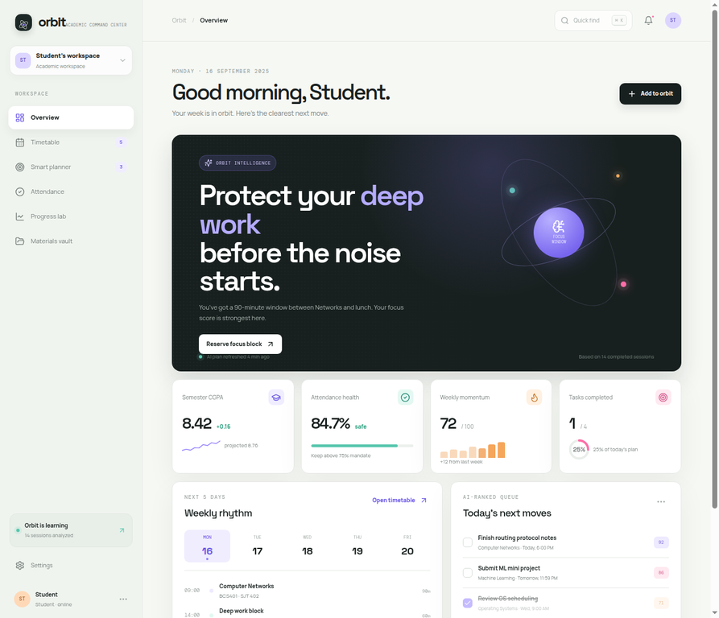
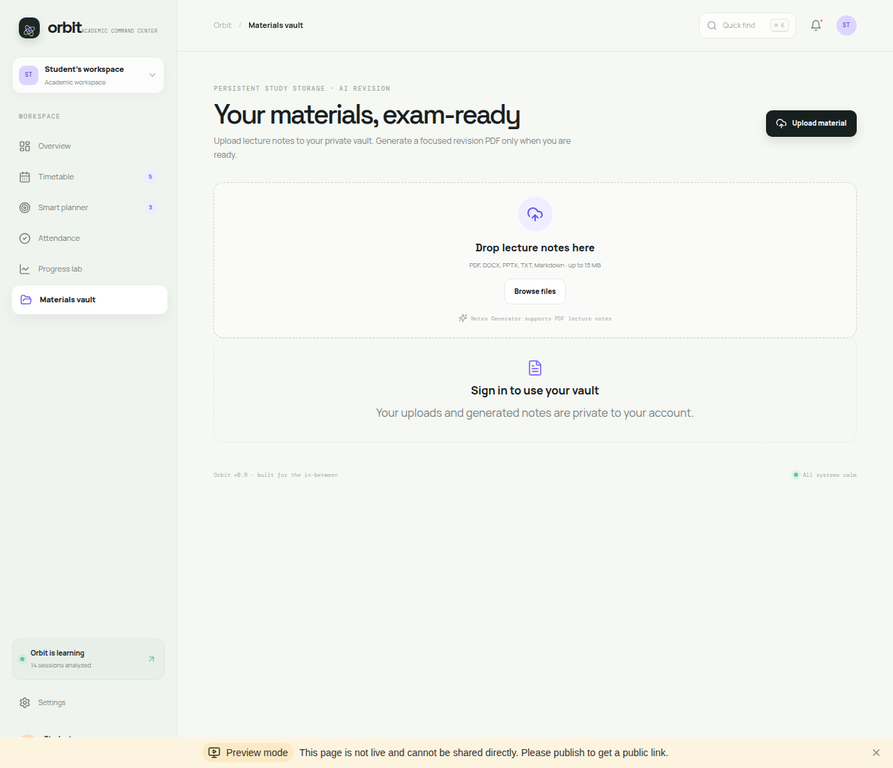

◫
Adaptive timetable
Hourly time-aligned grid, click-to-edit classes, drag/drop movement, theory and lab duration presets, and persistent timetable events.
Orbit brings timetable management, intelligent planning, persistent academic data, progress signals, and AI-generated exam notes into one calm workspace.
The Pages showcase is static by design. For login, database persistence, AI generation, uploads, and PDF downloads, use the full-stack app linked above.
Hourly time-aligned grid, click-to-edit classes, drag/drop movement, theory and lab duration presets, and persistent timetable events.
Natural-language academic input becomes a validated task with title, course, due date, priority, duration, and rationale.
Upload lecture PDFs, generate summaries, important topics, formulas, exam checklists, quick recall, and a gated PDF download.


GitHub Pages presents the project story; Manus hosts the backend-powered version with authentication, database, AI, storage, and PDF generation.